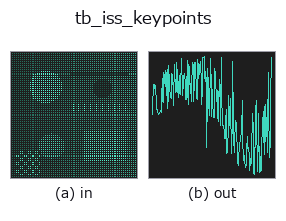

typed op• Data kinds: points → signal
• Call: fullseye.apply(img, "tb_iss_keypoints", a=0.5, b=0.5) (2-D model = एक image + दो scalar knobs a,b∈[0,1])

*Figure synthetic 128×128 input पर सच में चलाकर मिला output है। बाईं ओर input, दाईं ओर output। Point clouds ऊपर से देखे गए scatter के रूप में (brightness = z), 1-D series line के रूप में, volumes z दिशा में maximum-intensity projection के रूप में, videos बीच के frame के रूप में, complex images amplitude के रूप में, और जो return values चित्र नहीं बन सकते वे स्वयं values के रूप में दिखाए जाते हैं।*
Knob a को बदलकर (0.1 / 0.5 / 0.9, दूसरा knob default पर):
▸ tb_iss_keypoints: knob a को बदलने का figure (docs site)
Knob b को बदलकर (0.1 / 0.5 / 0.9, दूसरा knob default पर):
▸ tb_iss_keypoints: knob b को बदलने का figure (docs site)
Stages (पहले आने वाले ops → यह op, बाएँ से क्रम में):
▸ tb_iss_keypoints: stages का figure (docs site)
दूसरी images पर भी (synthetic scene / photo / coins। ऊपर की row में inputs, नीचे की row में उनके outputs। Knobs default पर):
▸ tb_iss_keypoints: दूसरी images पर output (docs site)
ISS (Intrinsic Shape Signatures, 3D Harris के समकक्ष) keypoint detection। Local covariance के सबसे छोटे eigenvalue λ3 को saliency मानकर, केवल distinct eigenvalues (दिशा well-defined) वाले points को candidates बनाता है और NMS से विरल रूप से चुनता है। Rotation-invariant। Return value = point index array।
> नीचे का विस्तृत विवरण मूल text में है — सारांश और headings का अनुवाद हो चुका है।
引数:
• points (N,3)。radius: saliency 用の近傍球半径(点群と同じ単位)。
• nms_radius: 非最大抑制の距離。None なら 0.6*radius。
• gamma21・gamma32: 固有値比 λ2/λ1、λ3/λ2 の上限(既定 0.99)。両方ともこれ
未満の点だけが候補(比が 1 に近い=等方で向きが決まらない点を除く)。
• max_kp: 返す上限。min_neighbors: 近傍がこれ未満の点は候補にしない(既定 8)。
手順: 各点で radius 内の近傍を集め、注目点を原点とした 2 次モーメント行列 (qᵀq)/n の固有値 λ1≥λ2≥λ3 を求める(λ1 が 1e-12 以下なら除外)。λ3 を saliency として降順に走査し、採用済みの点から nms_radius 未満にあるものを捨てる貪欲 NMS。返り値は int64 の点インデックス配列(saliency 降順)。候補が無ければ長さ 0。
注意: 近傍は注目点で中心化する(重心ではない)ため、平面上の点でも λ3 は厳密には 0 にならない。全点で近傍探索する Python ループなので、数万点を超える雲は voxel_grid_downsample で間引いてから使う。shot_descriptor のキーポイント入力に直結し、register_shot は内部で radius の 0.6 倍・NMS 0.3 倍で呼ぶ。
2-D 進化レジストリへ橋渡しした 3d の op iss_keypoints。実装は同じで、呼び出し規約だけ op(v, a, b) に合わせてある。a が gamma21(既定 0.99)、b が gamma32(既定 0.99)を振る。
• Sample data catalog (DL URL / license) — 2-D के लिए skimage.data (BSD/public) + synthetic, 3-D के लिए real data sources (Stanford/PDS आदि) के DL URL।
• Operators का स्रोत और संदर्भ — इस op family के मूल research/methods के स्रोत।
नीचे का program सच में चलता है, यह जाँचा गया है (figure वाला ही input)। Studio की help में यह block buttons बन जाता है, जिनसे इसे वहीं load करके चलाया जा सकता है।
img_to_points 0.50 0.50 tb_iss_keypoints 0.50 0.50
▸ यह pipeline load करें · Load करके चलाएँ
नीचे के उदाहरण मूल ledger op iss_keypoints को call करते हैं। यह bridge op वही implementation है, बस fn(v, a, b) convention के अनुसार ढाला गया है, इसलिए व्यवहार वैसा ही लागू होता है (केवल call का रूप अलग है)।
• feature_register — py -3.11 examples_3d/feature_register.py
signal को input के रूप में लेते हैं)identity · tb_create_funct_1d_array · tb_smooth_funct_1d_gauss · tb_smooth_funct_1d_mean · tb_derivate_funct_1d · tb_integrate_funct_1d · tb_zero_crossings_funct_1d · tb_abs_funct_1d
typed)tb_points_to_voxel · tb_estimate_point_normals · tb_project_points · tb_render_point_depth · tb_statistical_outlier_removal · tb_radius_outlier_removal · tb_voxel_grid_downsample · tb_mls_smooth
*Provenance: ops.py — 2D operator registry. यह per-op note tools/opdocs.py md से अपने-आप generate होता है (हाथ से edit न करें)।*
© 2026 Kazufumi Furuse — Fullseye operator documentation. Licensed under Apache-2.0.